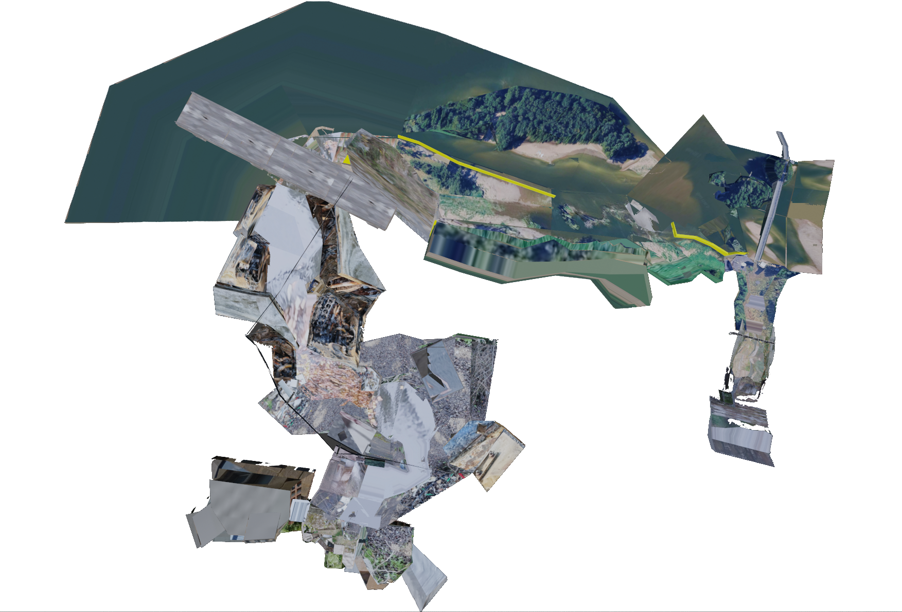

﹌﹌﹌﹌﹌﹌﹌﹌﹌﹌﹌
﹌﹌﹌﹌Q﹌﹌﹌﹌﹌﹌﹌﹌
﹌﹌﹌﹌﹌ñ﹌﹌﹌﹌﹌﹌﹌﹌﹌
﹌﹌﹌﹌﹌﹌﹌Ã﹌﹌﹌﹌﹌﹌﹌﹌﹌﹌﹌﹌
﹌﹌﹌﹌﹌﹌﹌﹌﹌﹌﹌﹌﹌﹌﹌﹌﹌﹌﹌﹌﹌﹌﹌﹌﹌﹌﹌﹌﹌﹌﹌﹌﹌﹌﹌﹌

What is this?
Love Streams is a collaborative sound piece. The video game world spans over 2km of a fictional river bed.
Among other things, the river is a repository of sounds ( or frequencies) gathered collectively, which means if you feel so inclined, you too can submit a sound to be littered somewhere in the landscape. More info on the project as a whole here
How do you decides which frequency goes where, and do I have a say in it.
The process is rather open ended, and I'm open to working with you if you feel like your file deserves xxxtra special attention. Otherwise I work intuitively. I start by titling each tracks based on vibes and then compose and contrast the landscape as a whole rather than as a selection of independant tracks. At the end of the day the sound remains yours and I'm only borrowing.
What kind of sounds are we talking?
There is a theme and an intent to this, but it's mine and I won't let it pollute your idea of what to submit. If I were to summarize it I would say it's about love letters, the radio and lost frequencies.
Can you give an example of what's already included ?
I have the sound of rain on windshields.
I have a recording of my friend's dad talking about his arrival in france and the may 68 protests.
I have sounds of a pro palestine demonstration.
I have the sound of an accordeon.
I have a handful of poem and bits from journals.
I have the sound of my old job's dishwasher.
I have tales of an assault and its aftermath.
I have the voice of someone's ex.
I have a cooking radio show.
I have the sound of traffic.
I have my friends playing music.
Will I get payed for this?
Probably not tbh. I have a dayjob and I'm not really doing this (any of this) for money, and probably won't earn anything from this specific project. I sometimes get payed for screenings or shows but it's not that much (or that frequent). If I end up applying to a substantial grant or a show (and get it) I might consider switching the business model but this is neither here nor there. When I get further in the project I'll probably create a mailing list. Either way I intend on crediting everyone.
I am doing this project for communal and poetic purposes though so if doable Ill gladly have the exchange of sounds be more than a simple email. Like we can also do this over coffee.
How do I submit ?
To submit a sound, any sound, you can shoot me an email(junes.dreyfus@gmail.com), an instagram DM, give me a call (if you have my number), or come to a future Call For Sound Event (and pressure me into making them happen).
What format for the file?
mp3 is best since it'll get compressed either way.. Poor quality sounds are also encouraged, I love to hear a room where something was recorded.
Is there a selection process ?
Probably, but I'll respond to everything.
This is still too blurry and incomprehensible...
That's not really a question but here's a fully finished and playable other game that follow the same principles, without the community aspect.
﹌﹌﹌﹌﹌﹌﹌﹌﹌﹌﹌﹌﹌﹌﹌﹌﹌﹌﹌﹌﹌﹌﹌﹌﹌﹌﹌﹌﹌﹌﹌﹌﹌﹌﹌﹌
﹌﹌﹌﹌﹌﹌﹌﹌﹌﹌﹌﹌﹌﹌﹌﹌﹌﹌﹌﹌﹌﹌﹌﹌﹌
﹌﹌﹌﹌﹌﹌﹌﹌﹌﹌﹌﹌﹌﹌﹌﹌﹌﹌﹌﹌
﹌﹌﹌﹌﹌﹌﹌﹌﹌﹌﹌﹌﹌﹌﹌﹌﹌﹌
﹌﹌﹌﹌﹌﹌﹌﹌﹌﹌﹌﹌﹌﹌﹌﹌
﹌﹌﹌﹌﹌﹌﹌﹌﹌﹌﹌﹌﹌﹌﹌
﹌﹌﹌﹌﹌﹌﹌﹌﹌﹌﹌﹌﹌﹌﹌
written by Junes on the 19th of October 2026. Any potential future contradiction supercedes what's written on here. Thank you.